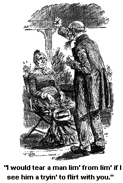
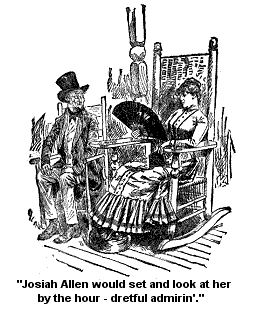
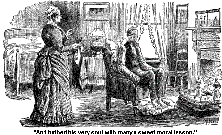
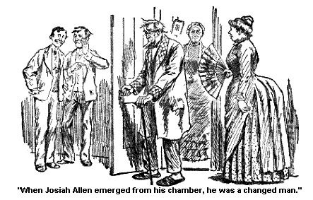

JOSIAH 'S FLIRTATIONS.
They say there is a sight of flirtin' done at Saratoga. I didn't hear so much about it as Josiah did, naturally there are things that are talked of more amongst men than women. Night after night he would come home and tell me how fashionable it wuz, and pretty soon I could see that he kinder wanted to follow the fashion.
I told him from the first on't that he'd better let it entirely alone. Says I, "Josiah Allen, you wouldn't never carry it through successful if you should undertake it -- and then think of the wickedness on't."
But he seemed sot. He said "it wuz more fashionable amongst married men and wimmen, than the more single ones," he said "it wuz dretful fashionable amongst pardners."`
"Wall," says I, "I shall have, nothin' to do with it, and I advise you, if you know when you are well off, to let it entirely alone."
"Of course," says he, fiercely, "You needn't have nothin' to do with it. It is nothin' you would want to foller up. And I would ruther see you sunk into the ground, or be sunk myself, than to see you goin' into it. Why," says he, savagely, "I would tear a man lim from lim, if I see him a tryin' to flirt with you." (Josiah Allen worships me.) "But," says he, more placider like, "men have to do things sometimes, that they know is too hard for their pardners to do -- men sometimes feel called upon to do things that their pardners don't care about -- that they haint strong enough to tackle. Wimmen are fragile creeters anyway."

"Oh, the fallacy of them arguments -- and the weakness of 'em.
But I didn't say nothin' only to reiterate my utterance, that "if he went into it, he would have to foller it up alone, that he musn't expect any help from me."
"Oh no!" says he. "Oh! certainly not."
His tone wuz very genteel, but there seemed to be sumthin' strange in it. And I looked at him pityin'ly over my specks. The hull idea on it wuz extremely distasteful to me, this talk about flirtin', and etc., at our ages, and with our stations in the Jonesville meetin' house, and with our grandchildren.
But I see from day to day that he wuz a hankerin' after it, and I almost made up my mind that I should have to let him make a trial, knowin' that experience wuz the best teacher, and knowin' that his morals wuz sound, and he wuz devoted to me, and only went into the enterprize because he thought it wuz fashionable.
There wuz a young English girl a boardin' to the same place we did. She dressed some like a young man, carried a cane, etc. But she wuz one of the upper 10, and wuz as pretty as a picture, and I see Josiah had kinder sot his eyes on her as bein' a good one to try his experiment with. He thought she wuz beautiful. But good land! I didn't care. I liked her myself. But I could see, though he couldn't see it, that she wuz one of the girls who would flirt with the town pump, or the meetin' house steeple, if she couldn't get nobody else to flirt with. She wuz born so, but I suppose ontirely unbeknown to her when she wuz born.
Wall, Josiah Allen would set and look at her by the hour -- dretful admirin'. But good land! I didn't care. I loved to look at her myself. And then too I had this feelin' that his morals wuz sound. But after awhile, I could see, and couldn't help seein', that he wuz a tryin' in his feeble way to flirt with her. And I told him kindly, but firmly, "that it wuz somethin' that I hated to see a goin' on."

But he says, "Well, dumb it all, Samantha, if anybody goes to a fashionable place, they ort to try to be fashionable. 'Taint nothin' I want to do, and you ort to know it."
And I says in pityin' axents but firm, "If you don't want to, Josiah, I wouldn't, fashion or no fashion."
But I see I couldn't convince him, and there happened to be a skercity of men jest then -- and he kep' it up, and it kep' me on the key veav, as Maggie says, when she is on the tenter hooks of suspense.
I felt bad to see it go on, not that I wuz jealous, no, my foretop lay smooth from day to day, not a jealous hair in it, not one -- but I felt sorry for my companion. I see that while the endurin' of it wuz hard and tejus for him (for truly he was not a addep at the business; it come tuff, feerful tuff on him), the endin' wuz sure to be harder. And I tried to convince him, from a sense of duty, that she wuz makin' fun of him -- he had told me lots of the pretty things she had said to him -- and out of principle I told him that she didn't mean one word of 'em. But I couldn't convince him, and as is the way of pardners, after I had sot the reasen and the sense before him, and he wouldn't hear to me, why then I had to set down and bear it. Such is some of the trials of pardners?
Wall, it kep' agoin' on, and a goin' on, and I kep' a hatin' to see it, for if anybody has got to flirt, which I am far from approvin' of, but if I have got to see it a goin' on, I would fain see it well done, and Josiah's efforts to flirt wuz like an effort of our old mair to play a tune on the melodian, no grace in it, no system, nor comfort to him, nor me.
I s'pose the girl got some fun out of it; I hope she did, for if she didn't it wuz a wearisome job all round.
Wall, a week or so rolled on, and it wuz still in progress. And one day an old friend of ours, Miss Ezra Balch, from the east part of Jonesville, come to see me. She come to Saratoga for the rheumatiz, and wuz gettin' well fast, and Ezra was gettin' entirely cured of biles, for which he had come, carbunkles.
Wall, she invited Josiah and me to take a ride with 'em, and we both accepted of it, and at the appointed time I wuz ready to the minute, down on the piazza, with my brown cotton gloves on, and my mantilly hung gracefully over my arm. But at the last minute, Josiah Allen said "he couldn't go."
I says "Why can't you go?"
"Oh," he says, kinder drawin' up his collar, and smoothin' down his vest, "Oh, I have got another engagement."
He looked real high-headed, and I says to him:
"Josiah Allen didn't you promise Druzilla Balch that you would go with her and Ezra to-day?"
"Wall yes," says he, "but I can't."
"Why not?" says I.
"Wall, Samantha, though they are well meanin', good people, they haint what you may call fashionable, they haint the upper 10."
Says I, "Josiah Allen you have fell over 15 cents in my estimation, sense we have begun talkin', you won't go with 'em because they haint fashionable. They are good, honest Christian Methodists, and have stood by you and me many a time, in times of trouble, and now," says I, "you turn against 'em because they haint fashionable." Says I, "Josiah Allen where do you think you'll go to?"
"Oh, probable down through Congress Park, and we may walk up as fur as the Indian Encampment. I feel kinder mauger to-day, and my corns ache feerful." (His boots wuz that small that they wuz sights to behold, sights!) "We probably shan't walk fur," says he.
I see how 'twuze in a minute. That English girl had asked him to walk with her, and my pardner had broken a solemn engagement with Ezra and Druzilla Balch to go a walkin' with her. I see how 'twuz, but I sot in silence and one of the big rockin' chairs, and didn't say nothin'.
Finally he says, with a sort of a anxious look onto his foreward:
"You don't feel bad, do you Samantha? You haint jealous, are you?"
"Jealous!" says I, a lookin' him calmly over from head to feet -- it wuz a witherin' look, and yet pitiful, that took in the hull body and soul, and weighed 'em in the balances of common sense, and pity, and justice. It wuz a look that seemed to envelop him all to one time, and took him all in, his bald head, his vest, and his boots, and his mind (what he had), and his efforts to be fashionable, and his trials and tribulations at it, and -- and everything. I give him that one long look, and then I says:
"Jealous? No, I haint jealous."
Then silence rained again about us, and Josiah spoke out (his conscience was a troublin' him), and he says:
"You know in fashionable life, Samantha, you have to do things which seem unkind, and Ezra, though a good, worthy man, can't understand these things as I do."
Says I: "Josiah Allen, you'll see the day that you'll be sorry for your treatment of Druzilla Balch, and Ezra."
"Oh wall," says he, pullin' up his collar, "I'm bound to be fashionable. While I can go with the upper 10, it is my duty and my privilege to go with 'em, and not mingle in the lower classes like the Balches."
Says I firmly, "You look out, or some of them 10 will be the death of you, and you may see the day that you will be glad to leave 'em, the hull 10 of em, and go back to Druzilla and Ezra Balch."
But what more words might have passed between us, wuz cut short by the arrival of Ezra and Druzilla in a good big carriage, with Miss Balch on the back seat, and Ezra acrost from her, and a man up in front a drivin'. It wuz a good lookin' sight, and I hastened down the steps, Josiah disappearin' inside jest as quick as he ketched sight of their heads.
They asked me anxiously "where Josiah wuz and why he didn't come?" And I told 'em, "that Josiah had told me that mornin' that he felt manger, and he had some corns that wuz a achin'."
So much wuz truth, and I told it, and then moved off the subject, and they seein' my looks, didn't pursue it any further. They proposed to go back to their boardin' place, and take in Deacon Balch, Ezra's brother from Chicago, who wuz stayin' there a few days to recooperate his energies, and get help for tizick. So they did. He wuz a widowed man. Yes, he was the widower of Cornelia Balch who I used to know well, a good lookin' and a good actin' man. And he seemed to like my appeerance pretty well, though I am fur from bein' the one that ort to say it.
And as we rolled on over the broad beautiful road towards Saratoga Lake, I begun to feel better in my mind.
The Deacon wuz edifyin' in conversation, and he thought, and said, "that my mind was the heftiest one that he had ever met, and he had met hundreds and hundreds of 'em." He meant it, you could see that, he meant every word he said. And it wuz kind of comfortin' to hear the Deacon say so, for I respected the Deacon, and I knew he meant just what he said.
He said, and believed, though it haint so, but the Deacon believed it, "that I looked younger than I did the day I wuz married."
I told him "I didn't feel so young."
"Wall," he said, "then my looks deceived me, for I looked as young, if not younger."
Deacon Balch is a good, kind, Christian man.
His conversation was very edifyin', and he looked kinder good, and warm-hearted at me out of his eyes, which wuz blue, some the color of my Josiah's. But alas! I felt that though some comforted and edified by his talk, still, my heart was not there, not there in that double buggy with 2 seats, but wuz afur off with my pardner. I felt that Josiah Allen wuz a carryin' my heart with him wherever he wuz a goin'. Curious, haint it? Now you may set and smile, and talk, and seem to be enjoyin' yourself first-rate, with agreeable personages all around you, and you do enjoy yourself with that part of your nater. But with it all, down deep under the laughs, and the bright words, the comfort you get out of the answerin' laughs, the gay talk, under it all is the steady consciousness that the real self is fur away, the heart, the soul is fur away, held by some creeter whether he be high, or whether he be low, it don't matter -- there your heart is, a goin' towards happiness, or a travellin' towards pain as the case may be -- curious, haint it?
Wall, Ezra and Druzilla wanted to go to the Sulphur Springs way beyend Saratoga Lake, and as the Deacon wuz agreeable, and I also, we sot out for it, though, as we all said, it wuz goin' to be a pretty long and tegus journey for a hot day. But we went along the broad, beautiful highway, by the high, handsome gates of the Racing Park, down, down, by handsome houses and shady woods, and fields of bright-colored wild flowers on each side of the road, down to the beautiful lake, acrost it over the long bridge, and then into the long, cool shadows of the bendin' trees that bend over the road on each side, while through the green boughs, jest at our side we could ketch a sight of the blue, peaceful waters, a lyin' calm and beautiful jest by the side of us -- on, on, through the long, sheltered pathway, out into the sunshine for a spell, with peaceful fields a layin' about us, and peaceful cattle a wanderin' over 'em, and then into the shade agin, till at last we see a beautiful mountin', with its head held kinder high, crowned with ferns and hemlocks, and its feet washed by the cool water of the beautiful lake.
The shadows of this mountin', tree crowned, lay on the smooth, placid wave, and a white sail boat wuz a comin' round the side on't, and floatin' over the green, crystal branches, and golden shadows. It wuz a fair seen, seen for a moment, and then away we went into the green shadows of the woods again, round a corner, and here we wuz, at the Sulphur Springs.
It wuz a quiet peaceful spot. The house looked pleasant, and so did the Landlord, and Landlady, and we dismounted and walked through a long clean hall, and went out onto a back piazza and sot down. And I thought as I sot there, that I would be glad enough to set there, for some time. Everything looked so quiet and serene. The paths leadin' up the hills in different directions, out into the green woods, looked quiet; the pretty, grassy backyard leadin' down to the water side looked green and peaceable, and around all, and beyond all, wuz the glory of the waters. They lay stretched out beautiful and in heavenly calm, and the sun, which wuz low in the West, made a gold path acrost 'em, where it seemed as if one could walk over only a little ways, into Perfect Repose. The Lake somehow looked like a glowin' pavement, it didn't look like water, but it seemed like broad fields of azure and palest lavender, and pinky grey, and pearly white, and every soft and delicate color that water could be crystalized into. And over all lay the glowin', tender sunset skies -- it wuz a fair seen. And even as I looked on in a almost rapped way, the sun come out from behind a soft cloud, and lay on the water like a pillow of fire jest as I dream that pillow did, that went ahead of my old 4 fathers.
The rest on 'em seemed to be more intent on the lemonade with 2 straws in 'em. I didn't make no fuss. They are nice, clean folks, I make no doubt. I wouldn't make no fuss and tell on the hired man -- women of the house have enough to worry 'em anyway. But he had dropped some straws into our tumblers, every one on 'em, I dare presume to say they had been a fillin' straw ticks. I jest took mine out in a quiet way, and throwed 'em to one side. The rest on 'em, I see, and it wuz real good in 'em, drinked through 'em, as we used to at school. It wuz real good in Druzilla, and Ezra, and also in the Deacon. It kinder ondeared the hull on 'em to me. I hope this won't be told of, it orto be kep -- for he wuz a goodnatured lookin' hired man, black, but not to blame for that -- and good land! what is a straw? -- anyway they wuz clean.
There wuz some tents sot up there in the back yard, lookin' some as I s'pose our old 4 fathers tents did, in the pleasant summer times of old. And I asked a bystander a standin' by, whose tents they wuz, and he said they wuz Free Thinkers havin' a convention.
And I says, "How free?"
And he said "they wuz great cases to doubt everything, they doubted whether they wuz or not, and if they wuz or when, and if so, why?"
And he says, "won't you stay to-night over and attend the meetin'?"
And I says, "What are they goin' to teach tonight?"
And he says, "The Whyness of the What"
I says, "I guess that is too deep a subject for me to tackle," and says I, "Don't they believe anything easier than that?"
And he says, "They don't believe anything. That is their belief -- to believe nothin'."
"Nothin'!" says I.
"Yes," says he, "Nothin'." And, says he, "to-morrer they are goin' to prove beyond any question, that there haint any God, nor anything, and never wuz anything."
"Be they?" sez I.
"Yes," says he, "and won't you come and be convinced?"
I looked off onto the peaceful waters, onto the hills that lay as the mountains did about Jerusalem, onto the pillow of fire that seemed to hold in it the flames of that light that had lighted the old world onto the mornin' of the new day, -- and one star had come out, and stood tremblin' over the brow of the mountain and I thought of that star that had riz so long time ago, and had guided the three wise men, guided 'em jest alike from their three different homes, entirely unbeknown to each other, guidin' 'em to the cradle where lay the infant Redeemer of the world, so long foretold by bard and prophet. I looked out onto the heavenly glory of the day, and then inside into my heart, that held a faith jest as bright and undyin' as the light of that star -- and I says, "No, I guess I won't go and be convinced."
Wall, we riz up to go most immediately afterwerds, and the Deacon (he is very smart) observed:
"How highly tickled and even highlarious the man seemed in talkin' about there not bein' any future." And he says, "It wuz a good deal like a man laughin' and clappin' his hands to see his house burn down"
And I sez, "it wuz far wurse, for his home wouldn't stand more'n a 100 years or so, and this home he wuz a tryin' to destroy, wuz one that would last through eternity." "But," says I, "it hain't built by hands, and I guess their hands hain't strong enough to tear it down, nor high enough to set fire to it."
And the Deacon says, "Jest so, Miss Allen, you spoke truthfully, and eloquent." (The Deacon is very smart.)
When we got into the buggy to start, the Deacon says, "I would like to resoom the conversation with you, Josiah Allen's wife, a goin' back."
And Druzilla spoke right out and says, "I will set on the front seat by Ezra." I says, "Oh no, Druzilla, I can hear the Deacon from where I sot before."
But the Deacon says, Talkin' loud towards night always offected his voice onpleasantly, mebby Druzilla and he had better change seats.
Again I demurred. And then Druzilla said she must set by Ezra, she wanted to tell him sumthin' in confidence.
And so it wuz arraigned, for I felt that I wuz not the one to come between pardners, no indeed. The road laid peacefuller and beautifuller than ever, or so it seemed under the sunset glory that sort o' hung round it. Jest about half way through the woods we met the English girl, a stridin' along alone, each step more'n 3 feet long, or so it seemed to me. There wuz a look of health, and happy determination on her forwerd as she strided rapidly by.
I would have fain questioned her concernin' my pardner, as she strode by, but before I could call out, or begon to her she wuz far in the rearwerd, and goin' in a full pressure and in a knot of several miles an hour.
Wall, from that minute I felt strange and curious. And though Druzilla and Ezra was agreeable and the Deacon edifyin', I didn't seem to feel edified, and the most warm-hearted looks didn't seem to warm my heart none, it wuz oppressed with gloomy forebodings of, Where wuz my pardner? They had laid out to set out together. Had they sot? This question was a goverin' me, and the follerin' one: If they had sot out together, where wuz my pardner, Josiah Allen, now? As I thought these feerful thoughts, instinctively I turned around to see if I could see a trace of his companion in the distance. Yes, I could ketch a faint glimpse of her as she wuz mountin' a diclivity, and stood for an instant in sight, but long before even, she disopeered agin, for her gait wuz tremendous, and at a rate of a good many knots she wuz a goin', that I knew. And the fearful thought would rise, Josiah Allen could not go more than half a knot, if he could that. He wuz a slow predestinatur any way, and then his corns was feerful, and never could be told -- and his boots had in 'em the elements of feerful sufferin'. It wuz all he could do when he had 'em on to hobble down to the spring, and post-office. Where? where wuz he? And she a goin' at the rate of so many knots.
Oh! the agony of them several minutes, while these thoughts wuz rampagin through my destracted brain.
Oh! if pardners only knew the agony they bring onto their devoted companions, by their onguarded and thoughtless acts, and attentions to other females, gin without proper reseerch and precautions, it would draw their liniments down into expressions of shame and remorse. Josiah wouldn't have gone with her if he had known the number of knots she wuz a goin', no, not one step -- then why couldn't he have found out the number of them knots -- why couldn't he? Why can't pardners look ahead and see to where their gay attentions, their flirtations that they call mild and innercent, will lead 'em to? Why can't they realize that it haint only themselves they are injurin', but them that are bound to 'em by the most sacred ties that folks can be twisted up in? Why can't they realize that a end must come to it, and it may be a fearful and a shameful one, and if it is a happiness that stops, it will leave in the heart when happiness gets out, a emptiness, a holler place, where like as not onhappiness will get in, and mebby stay there for some time, gaulin' and heart-breakin' to the opposite pardner to see it go on?
If it is indifference, or fashion, or anything of that sort, why it don't pay none of the time, it don't seem to me it duz, and the end will be emptier and hollerer then the beginnin'.
In the case of my pardner it wuz fashion, nothing but the butterfly of fashion he wuz after, to act in a high-toned, fashionable manner, like other fashionable men. And jest see the end on't why he had brought sufferin' of the deepest dye onto his companion, and what, what hed he brought onto himself -- onto his feet?
Oh! the agony of them several moments while them thoughts was a rackin' at me. The moments swelled out into a half hour, it must have been a long half hour, before I see far ahead, for the eyes of love is keen - a form a settin' on the grass by the wayside, that I recognized as the form of my pardner. As we drew nearer we all recognized the figure -- but Josiah Allen didn't seem to notice us. His boots was off, and his stockin's, and even in that first look I could see the agony that was a rendin' them toes almost to burstin'. Oh, how sorry I felt for them toes! He was a restin' in a most dejected and melancholy manner on his hand, as if it wuz more than sufferin' that ailed him -- he looked a sufferer from remorse, and regret, and also had the air of one whom mortification has stricken.
He never seemed to sense a thing that wuz passin' by him, till the driver pulled up his horses clost by him, and then he looked up and see us. And far be it from me to describe the way he looked in his lowly place on the grass. There wuz a good stun by him on which he might have sot, but no, he seemed to feel too mean to get up onto that stun; grass, lowly, unassumin' grass, wuz what seemed to suit him best, and on it he sot with one of his feet stretched out in front of him.
Oh! the pitifulness of that look he gin us, oh! the meakinness of it. And even, when his eye fell on the Deacon a settin' by my side, oh! the wild gleam of hatred, and sullen anger that glowed within his orb, and revenge! He looked at the Deacon, and then at his boots, and I see the wild thought wuz a enterin' his sole, to throw that boot at him. But I says out of that buggy the very first thing the words I have so oft spoke to him in hours of danger:
"Joisiah, be calm!"
His eye fell onto the peaceful grass agin, and he says: "Who hain't a bein' calm? I should say I wuz calm enough, if that is what you want."
But, oh, the sullenness of that love.
Says Ezra, good man -- he see right through it all in a minute, and so did Druzilla and the Deacon -- says Ezra, "Get up on the seat with the driver, Josiah Allen, and drive back with us."
"No," says Josiah, "I have no occasion, I am a settin' here," (looking round in perfect agony) "I am a settin' here to admire the scenery."
Then I leaned over the side of the buggy, and says I, "Josiah Allen, do you get in and ride, it will kill you to walk back; put on your boots if you can, and ride, seein' Ezra is so perlite as to ask you."
"Yes, I see he is very perlite, I see you have set amongst very perlite folks, Samantha," says he, a glarin' at Deacon Balch as if he would rend him from lim to lim, "But as I said, I have no occasion to ride, I took off my boots and stockin's merely -- merely to pass away time. You know at fashionable resorts," says he, "it is sometimes hard for men to pass away time."
Says I in low, deep accents, "Do put on your stockin's, and your boots, if you can get 'em on, which I doubt, but put your stockin's on this minute, and get in, and ride."
"Yes," says Ezra, "hurry up and get in, Josiah Allen, it must be dretful oncomfortabe a settin' down there in the grass."
"Oh, no!" says Josiah, and he kinder whistled a few bars of no tune that wuz ever heard on, or ever will be heard on agin, so wild and meloncholy it wuz -- "I sot down here kind o' careless. I thought seein' I hadn't much on hand to do at this time o' year, I thought I would like to look at my feet -- we hain't got a very big lookin' glass in our room."
Oh, how incoherent and over-crazed he was a becomin'! Who ever heard of seein' anybody's feet in a lookin' glass -- of dependin' on a lookin' glass for a sight on 'em? Oh, how I pitied that man! and I bent down and says to him in soothin' axents: "Josiah Allen, to please your pardner you put on your stockin's and get into this buggy. Take your boots in your hand, Josiah, I know you can't get 'em on, you have walked too far for them corns. Corns that are trampled on, Josiah Allen, rise up and rends you, or me, or anybody else who owns 'em or tramples on 'em. It hain't your fault, nobody blames you. Now get right in."
"Yes, do," says the Deacon.
Oh! the look that Josiah Allen gin him. I see the voyolence of that look, that rested first on the Deacon, and then on that, boot.
And agin I says, "Josiah Allen." And agin the thought of his own feerful acts, and my warnin's came over him, and again mortification seemed to envelop him like a mantilly, the tabs goin' down and coverin' his lims -- and agin he didn't throw that boot. Agin Deacon Balch escaped oninjured, saved by my voice, and Josiah's inward conscience, inside of him.
Wall, suffice it to say, that after a long parley, Josiah Allen wuz a settin' on the high seat with the driver, a holdin' his boots in his hand, for truly no power on earth could have placed them boots on Josiah Allen's feet in the condition they then wuz.
And so he rode on howewards, occasionally a lookin' down on the Deacon with looks that I hope the recordin' angel didn't photograph, so dire, and so revengeful, and jealous, and -- and everything, they wuz. And ever, after ketchin' the look in my eye, the look in his'n would change to a heart-rendin' one of remorse, and sorrow, and shame for what he had done. And the Deacon, wantin' to be dretful perlite to him, would ask him questions, and I could see the side of Josiah's face, all glarin' like a hyena at the sound of his voice, and then he would turn round and ossume a perlite genteel look as he answered him, and then he glare at me in a mad way every time I spoke to the Deacon, and then his mad look would change, even to one of shame and meakinness. And he in his stockin' feet, and a pertendin' that he didn't put his boots on, because it wuzn't wuth while to put 'em on agin so near bed-time. And he that sot out that afternoon a feelin' so haughty, and lookin' down on Ezra and Druzilla, and bein' brung back by 'em, in that condition -- and bein' goured all the time by thoughts of the ignominious way his flirtin' had ended, by her droppin' him by the side of the road, like a weed she had trampled on too hardly. And a bein' gourded deeper than all the rest of his agonies, by a senseless jealousy of Deacon Balch -- and a thinkin' for the first time in his life, what it would be, if her affections, that had been like a divine beacon to him all his life, if that flame should ever go out, or ever flicker in its earthly socket -- oh, those thoughts that he had seemed to consider in his own mad race for fashion -- oh, how that sass that had seemed sweet to him as a gander, oh how bitter and poisonous it wuz to partake of as a goose.
Oh! the agony of that ride. We went middlin' slow back -- and before we got to Saratoga the English girl went past us, she had been to the Sulphur Springs and back agin. She didn't pay no attention to us, for she wuz alayin' on a plan in her own mind, for a moonlight pedestrian excursion on foot, that evenin', out to the old battle ground of Saratoga.
Josiah never looked to the right hand or the left, as she passed him, at many, many a knot an hour. And I felt that my pardner's sufferin from that cause was over, and mine too, but oh! by what agony wuz it gained. For 3 days and 3 nights he never stood on any of his feet for a consecutive minute and a half, and I bathed him with anarky, and bathed his very soul with many a sweet moral lesson at the same time. And when at last Josiah Allen emerged from that chamber, he wuz a changed man in his demeanor and liniment, such is the power of love and womanly devotion.

He never looked at a woman durin' our hull stay at Saratoga, save with the eye of a philosopher and a Methodist.
